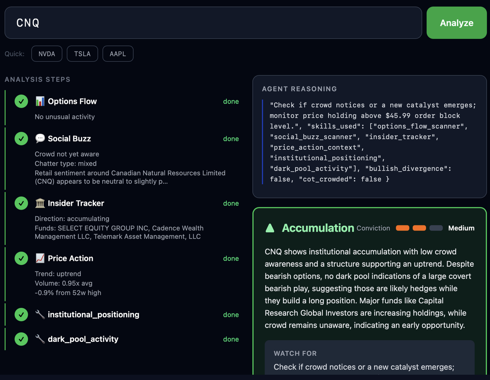
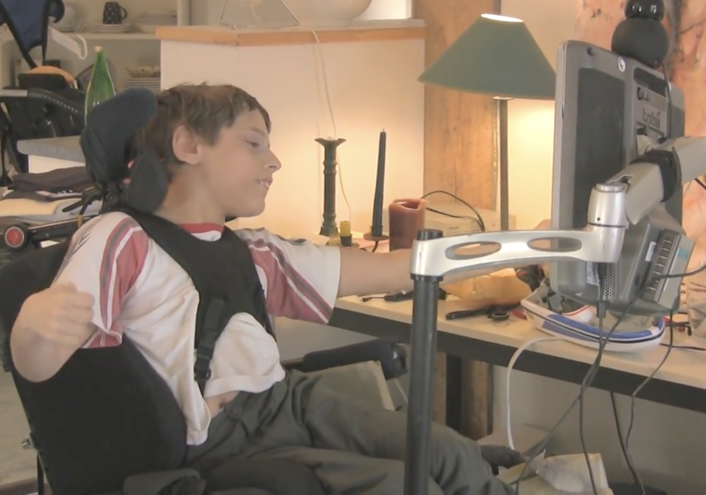
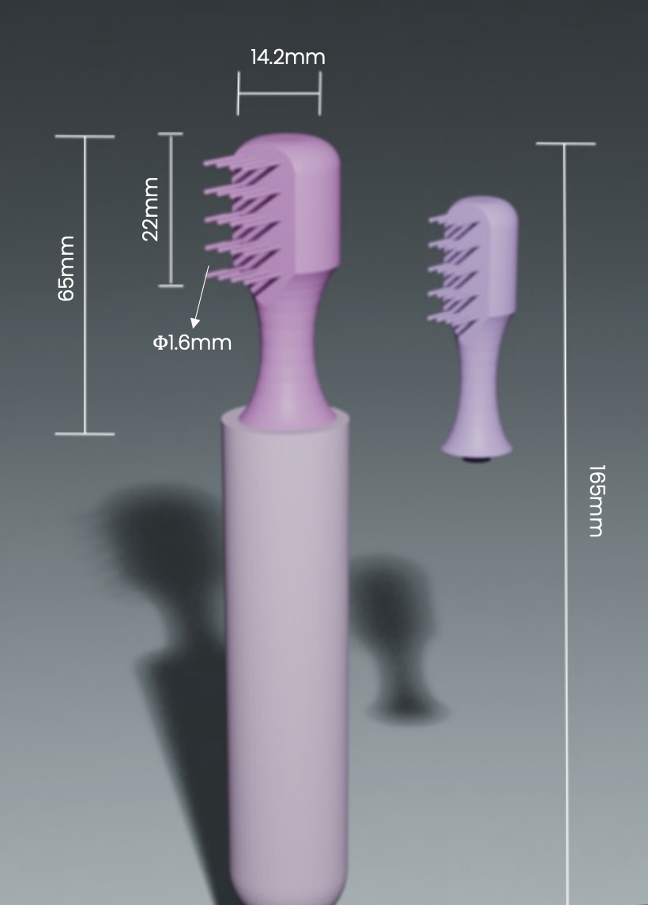
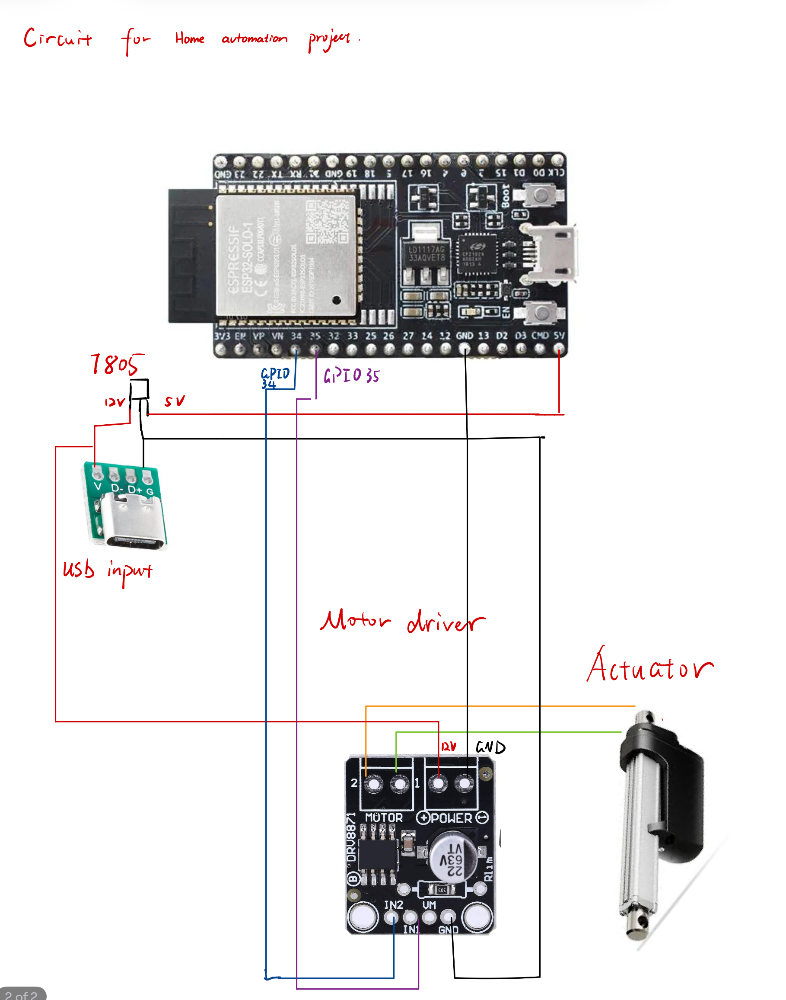
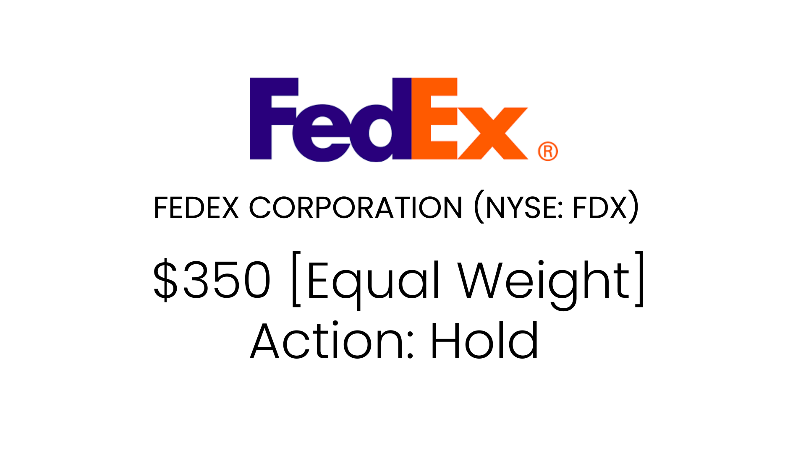
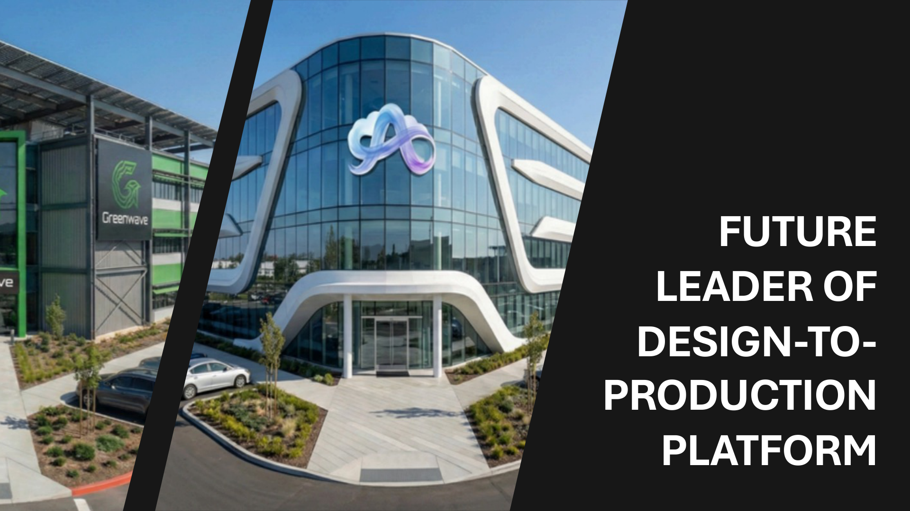
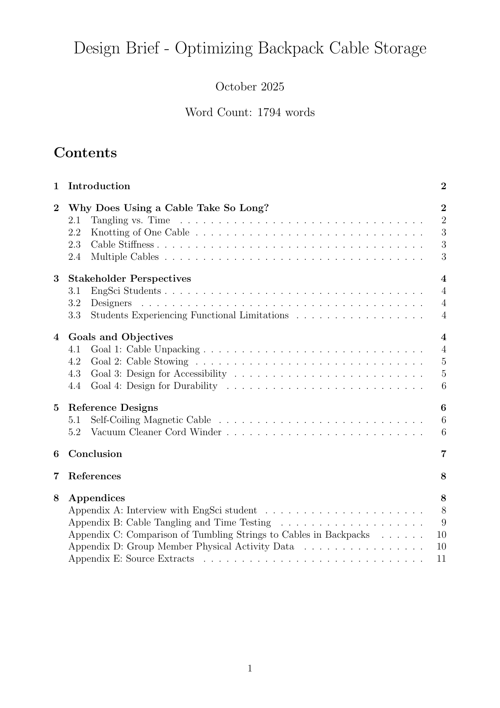

Projects
What I've Built
Portfolio Hub
Full-stack AI-powered portfolio management web app built with Flask and WebSockets. Features a multi-stage agentic pipeline — investor screening, smart money signals, news analysis, and composite scoring — delivering real-time TRIM / HOLD / ADD recommendations across a personalized holdings dashboard.

Creamy — Smart Money Agent
An agentic AI system with 6 specialized tools: Options flow detection, Dark Pool volume absorption and flow/price divergence, Institutional Positioning, SEC filings, and Social Buzz. Built to surface institutional trading footprints before retail attention arrives — winner of the GenAI Genesis Hackathon Smart Money track.

Silent Sensor — Sip & Puff Switch
Leading a 15-member UTBionic team to develop a sip-and-puff assistive input device for a wheelchair user with unpredictable tonic head movements. The pressure sensor and Arduino-based system enables fully independent device control through breath, mounting on a flexible arm or wheelchair frame for reliable access regardless of head movement.

Sensory Desensitization Toothbrush
Designed a transitional oral hygiene device for children with sensory processing disorders (SPD) who experience oral tactile hypersensitivity — affecting 1 in 6 children. Leverages natural chewing as a stimming bridge toward conventional toothbrushing. Won the Most Creative Design Award at SmileHacks × CUBE 2026.

HomeAutomation — Voice Door Control
IoT project enabling a disabled client to open their front door using voice commands. Developed software and circuits integrating an ESP32 microcontroller, motor driver, and linear actuator, with GPIO-controlled relay logic for door mechanism actuation.

FedEx Stock Pitch — DCF Valuation
Built a comprehensive DCF, DDM, and Graham valuation model for FedEx Corporation (NYSE: FDX), arriving at a $350 price target (Equal Weight / Hold). Presented full industry analysis, forward-looking spinoff analysis, and investment thesis at the UTEFA Stock Pitch Competition.

UTEFA Case — MarketEdge Investment
Conducted strategic risk assessment across 4 dimensions — infrastructure, expansion, resource, and concentration risk — using financial metrics (ARR, YoY growth, runway) to deliver an investment recommendation for a design-to-production software platform partnership at the RCAG × UTEFA Case Competition.

Praxis I — Backpack Cable Storage
Design brief exploring solutions to reduce cable tangling and unstowing time for Engineering Science students. Applied cable stiffness research, tangle probability modelling, and stakeholder interviews. Incorporated accessibility principles for users with upper-limb limitations.

CIV102 — Bridge Design
Collaborative bridge design project applying structural engineering principles from CIV102: Structures and Materials. Full iterative design process from diverging explorations through converging selection, documented with engineering calculations, assembly drawings, and design reports.